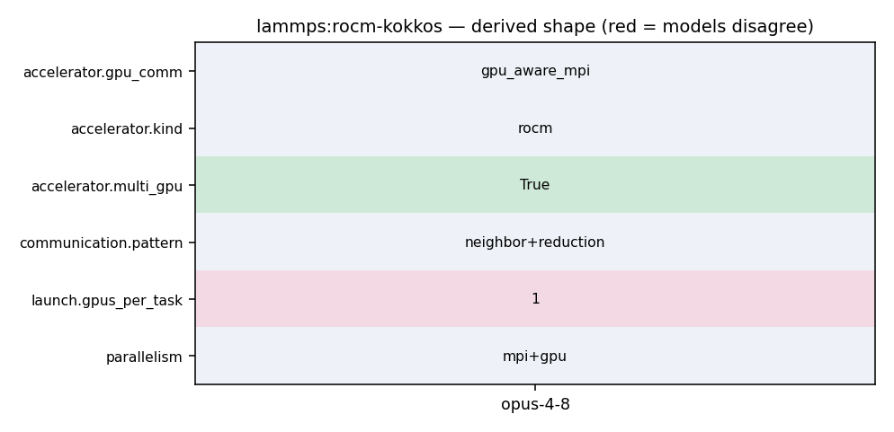

srun -n 32 lmp -k on g 8 -sf kk -pk kokkos gpu/aware on -in in.reaxff
313 speedup (see the KOKKOS :doc:`package <package>` command). Using CUDA MPS 314 is recommended in this scenario. 315 316 Using a GPU-aware MPI library is highly recommended. GPU-aware MPI use can be 317 avoided by using :doc:`-pk kokkos gpu/aware off <package>`. As above for 318 multicore CPUs (and no GPU), if N is the number of physical cores/node, 319 then the number of MPI tasks/node should not exceed N. 320
18 19 # these flags are needed to build with Cray MPICH on OLCF Crusher 20 #-D CMAKE_CXX_FLAGS="-I/${MPICH_DIR}/include" 21 #-D MPI_CXX_LIBRARIES="-L${MPICH_DIR}/lib -lmpi -L${CRAY_MPICH_ROOTDIR}/gtl/lib -lmpi_gtl_hsa"
4 set(Kokkos_ENABLE_SERIAL ON CACHE BOOL "" FORCE) 5 set(Kokkos_ENABLE_OPENMP OFF CACHE BOOL "" FORCE) 6 set(Kokkos_ENABLE_CUDA OFF CACHE BOOL "" FORCE) 7 set(Kokkos_ENABLE_HIP ON CACHE BOOL "" FORCE) 8 set(Kokkos_ARCH_VEGA90A on CACHE BOOL "" FORCE) 9 set(BUILD_OMP ON CACHE BOOL "" FORCE) 10
36 Kokkos currently provides full support for 4 modes of execution (per MPI 37 task). These are Serial (MPI-only for CPUs and Intel Phi), OpenMP 38 (threading for many-core CPUs and Intel Phi), CUDA (for NVIDIA GPUs) and 39 HIP (for AMD GPUs). Additional modes (e.g. OpenMP target, Intel data 40 center GPUs) are under development. You choose the mode at build time 41 to produce an executable compatible with a specific hardware. 42
304 ^^^^^^^^^^^^^^^ 305 306 Use the ``-k`` :doc:`command-line switch <Run_options>` to specify the 307 number of GPUs per node. Typically the ``-np`` setting of the ``mpirun`` command 308 should set the number of MPI tasks/node to be equal to the number of 309 physical GPUs on the node. You can assign multiple MPI tasks to the same 310 GPU with the KOKKOS package, but this is usually only faster if some 311 portions of the input script have not been ported to use Kokkos. In this 312 case, also packing/unpacking communication buffers on the host may give
16 # hide deprecation warnings temporarily for stable release 17 #set(Kokkos_ENABLE_DEPRECATION_WARNINGS OFF CACHE BOOL "" FORCE) 18 19 # these flags are needed to build with Cray MPICH on OLCF Crusher 20 #-D CMAKE_CXX_FLAGS="-I/${MPICH_DIR}/include" 21 #-D MPI_CXX_LIBRARIES="-L${MPICH_DIR}/lib -lmpi -L${CRAY_MPICH_ROOTDIR}/gtl/lib -lmpi_gtl_hsa"
586 leaguesize = (nn + teamsize - 1) / (teamsize); 587 } 588 589 if (neighflag != FULL) { 590 int nall = nlocal + atomKK->nghost; 591 Kokkos::parallel_for(Kokkos::RangePolicy<DeviceType,TagQEqZeroQGhosts>(atom->nlocal,nall),*this); 592 593 if (need_dup) 594 dup_o.reset_except(d_o);
1048 my_sum += SQR(v[i]); 1049 } 1050 1051 MPI_Allreduce(&my_sum, &norm_sqr, 1, MPI_DOUBLE, MPI_SUM, world); 1052 1053 return sqrt(norm_sqr); 1054 }
304 ^^^^^^^^^^^^^^^ 305 306 Use the ``-k`` :doc:`command-line switch <Run_options>` to specify the 307 number of GPUs per node. Typically the ``-np`` setting of the ``mpirun`` command 308 should set the number of MPI tasks/node to be equal to the number of 309 physical GPUs on the node. You can assign multiple MPI tasks to the same 310 GPU with the KOKKOS package, but this is usually only faster if some 311 portions of the input script have not been ported to use Kokkos. In this 312 case, also packing/unpacking communication buffers on the host may give
4 set(Kokkos_ENABLE_SERIAL ON CACHE BOOL "" FORCE) 5 set(Kokkos_ENABLE_OPENMP OFF CACHE BOOL "" FORCE) 6 set(Kokkos_ENABLE_CUDA OFF CACHE BOOL "" FORCE) 7 set(Kokkos_ENABLE_HIP ON CACHE BOOL "" FORCE) 8 set(Kokkos_ARCH_VEGA90A on CACHE BOOL "" FORCE) 9 set(BUILD_OMP ON CACHE BOOL "" FORCE) 10
16 Contributing authors: Ray Shan (SNL), Stan Moore (SNL), 17 Evan Weinberg (NVIDIA) 18 19 Nicholas Curtis (AMD), Leopold Grinberd (AMD), and Gina Sitaraman (AMD): 20 - Reduced math overhead: enabled specialized calls (e.g., cbrt for a 21 cube root instead of pow) and use power/exponential laws to reduce the 22 number of exponentials evaluated, etc. 23 - Added blocking to the Torsion and (optionally) BuildLists kernels, to 24 reduce thread divergence on GPUs 25 - Added preview to BuildLists kernels along with full version 26 ------------------------------------------------------------------------- */ 27 28 #include "pair_reaxff_kokkos.h"